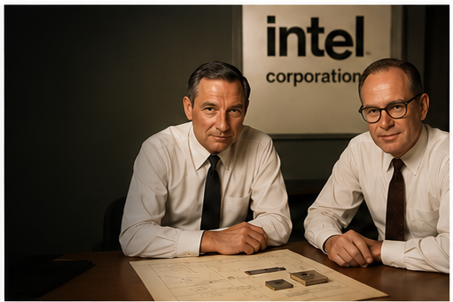
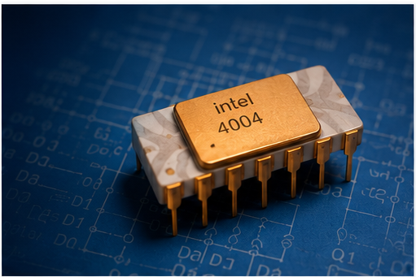
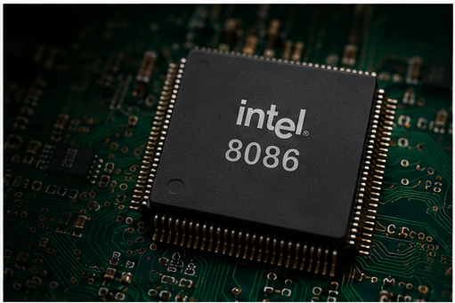
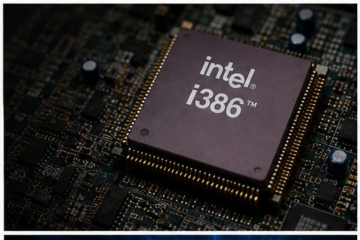
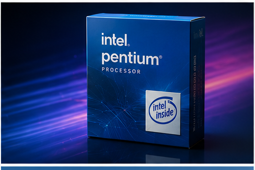
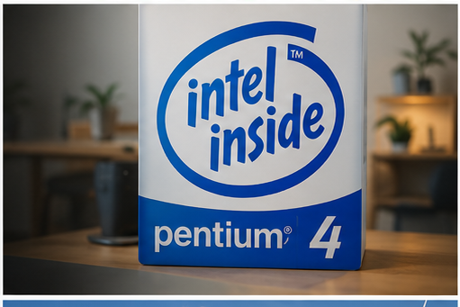
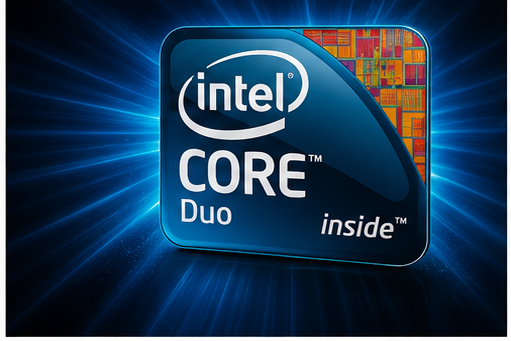
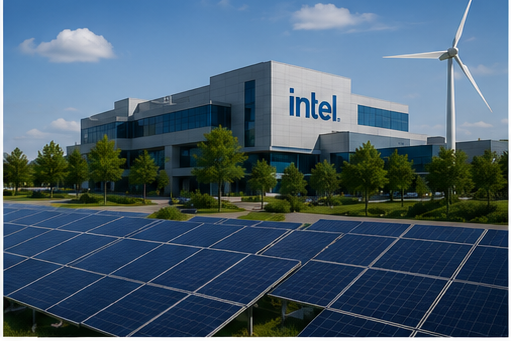

1968
Intel is founded
Robert Noyce and Gordon Moore helped launch Intel Corporation, beginning a new chapter in semiconductor innovation.
History and Innovation
From the first commercial microprocessor to modern sustainability goals, Intel has helped shape the world of computing and technology.
Intel started in 1968 and quickly became a leader in semiconductors. The company introduced processors that powered personal computers, changed how software was built, and helped define modern digital life.
Major milestones

1968
Robert Noyce and Gordon Moore helped launch Intel Corporation, beginning a new chapter in semiconductor innovation.

1971
Intel introduced the 4004, the world's first commercial microprocessor, paving the way for programmable computing.

1978
The 8086 processor helped establish the x86 architecture, which became a foundation for modern PCs and servers.

1985
The 386 processor brought 32-bit computing to personal computers, improving speed, memory handling, and multitasking.

1993
The Pentium processor became a landmark product in Intel's rise, helping the company become a household name in computing.

2000
Intel's marketing pushed the “Intel Inside” message into homes, making the company a symbol of trusted computer performance.

2006
Intel's Core platform helped redefine performance for laptops, desktops, and data centers with improved efficiency and speed.
2020
Intel launched its RISE strategy, focusing on responsible, inclusive, sustainable, and enabling innovation for the future.

2024
Intel continued its push toward cleaner manufacturing, renewable electricity, and ambitious climate goals, including net-zero.